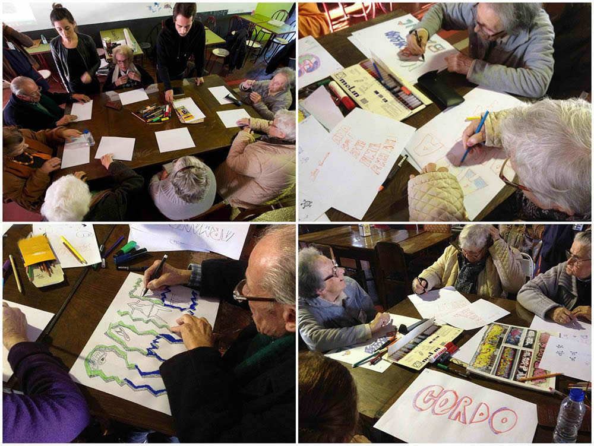
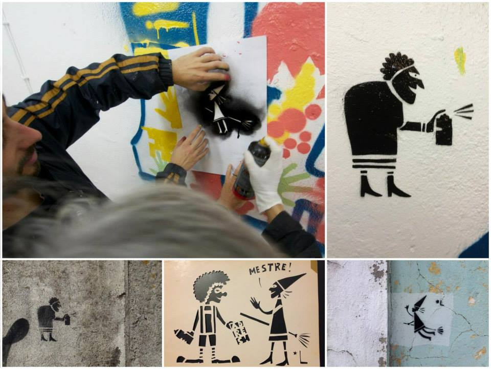
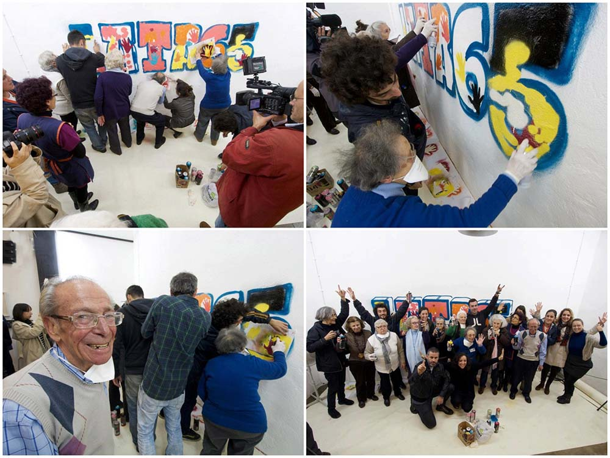

Projeto de graffiti para terceira idade
O Wool - Festival de Arte Urbana da Covilhã (Portugal), lançou um projeto para inserir os idosos no universo do graffiti.
O projeto é chamado de Lata65 surgiu não só com o objetivo de aproximar os menos jovens a uma forma de expressão geralmente associada aos mais novos, mas também porque havia sempre uma galera da terceira idade acompanhando o trabalho dos artistas do
Wool. A primeira edição do Lata65 durou 5 dias, com uma introdução histórica sobre como surgiu o graffiti e sua evolução, o que é hoje
a arte urbana, o que é aquilo que vemos pelas ruas, etc.

Os dias seguintes foram de aprendizagem de todas as técnicas e trabalhos
que se podem fazer na rua, desde o stencil, passando pelo marcador, ao spray e ao vídeo, tudo num ambiente descontraído e alegre.
Segundo o Wool, os resultados ultrapassaram as expectativas e provaram que é possível o diálogo de gerações como forma de apresentar novas atividades e arte contemporânea dita dos mais jovens aos idosos, consequentemente lhes proporcionando uma quebra da rotina, gerando qualidade, jovialidade e bem estar nas suas vidas.

No fim da primeira edição do LATA65, foi feito um mural com todo mundo. É de toda esta constatação que surgiu a proposta ao Orçamento Participativo de Lisboa, para que a galera possa repetir isto com mais grupos de idosos e por mais zonas, pela fórmula criativa (comprovada) de tratamento dos nossos idosos (que um dia também seremos).
